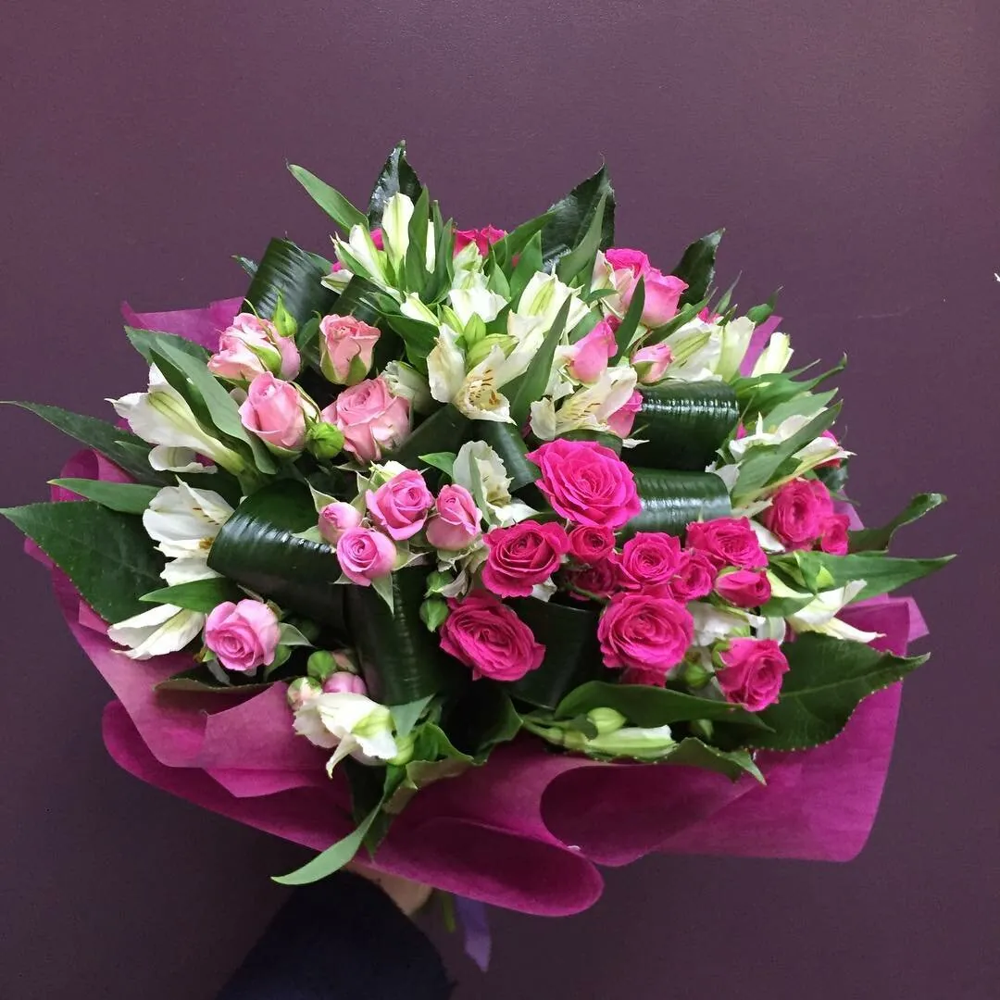
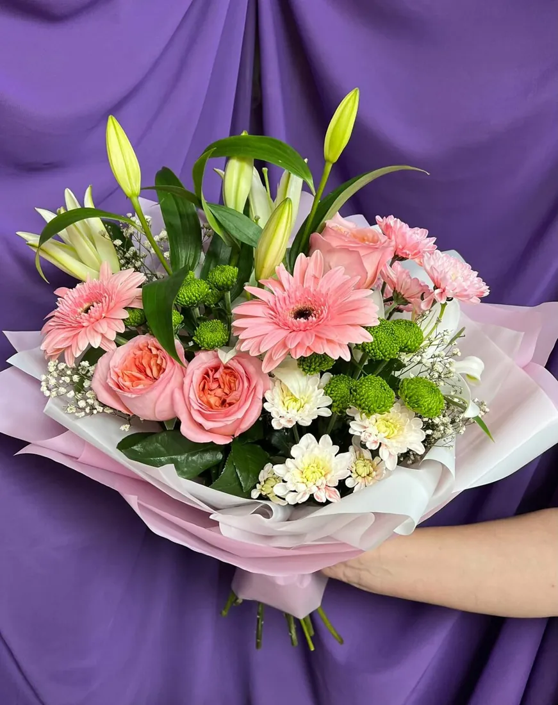
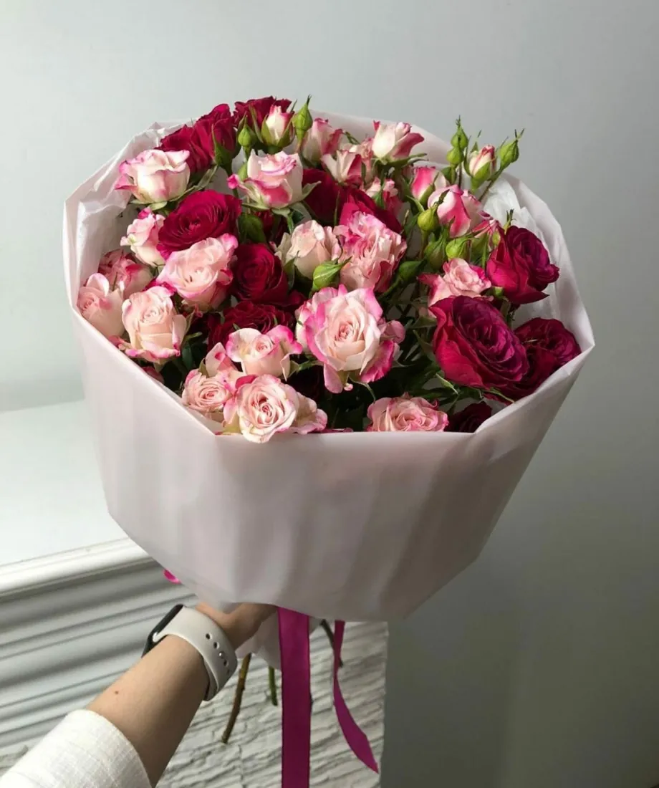
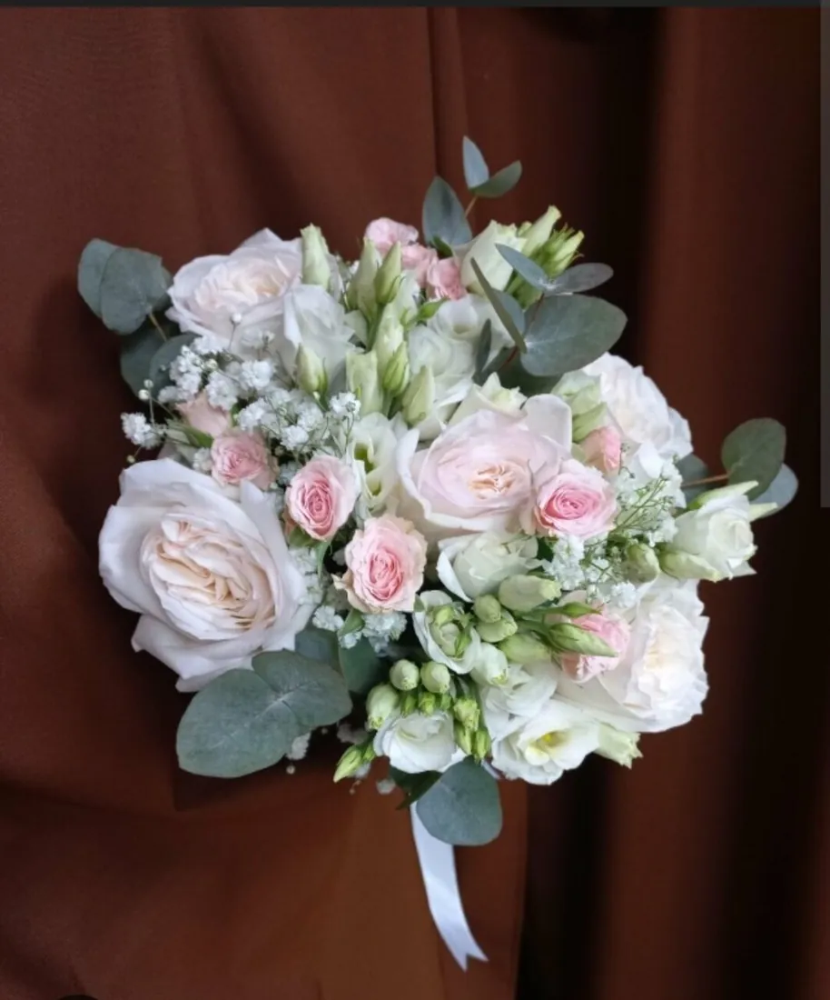
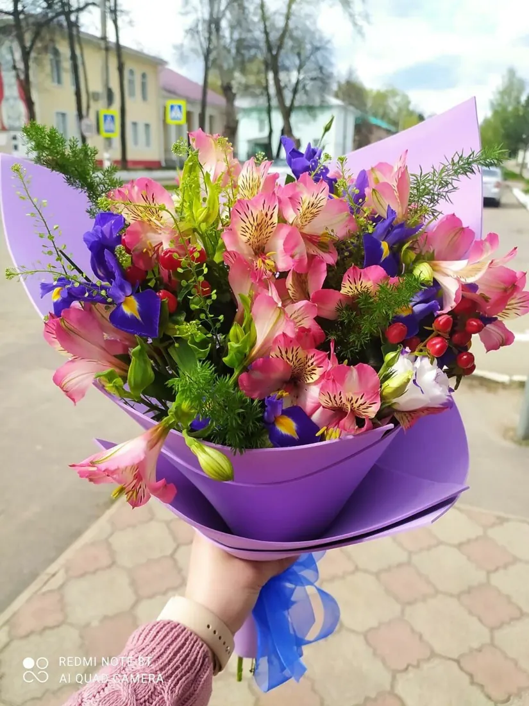
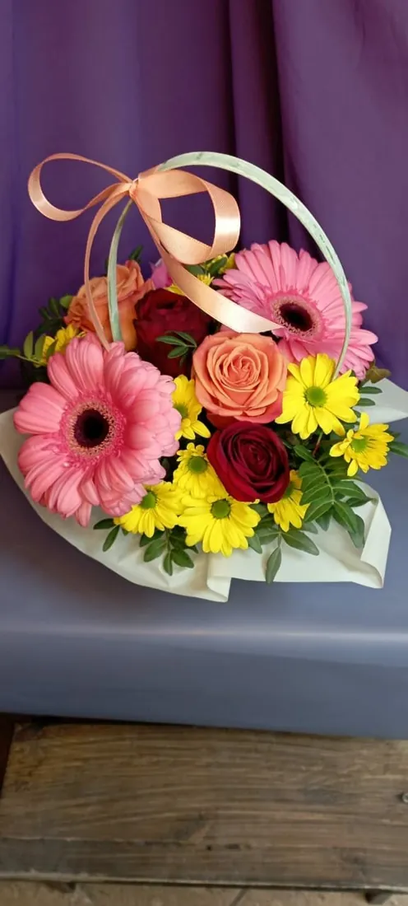
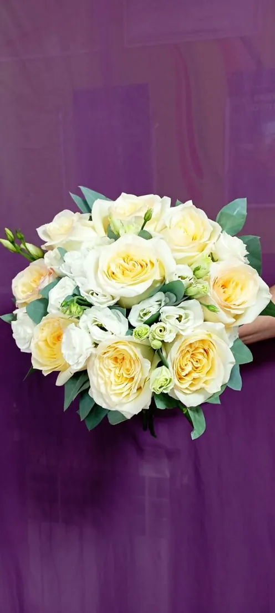
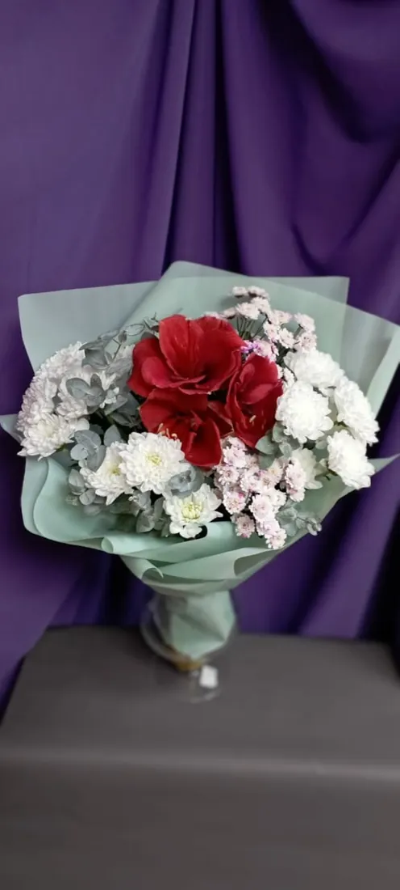
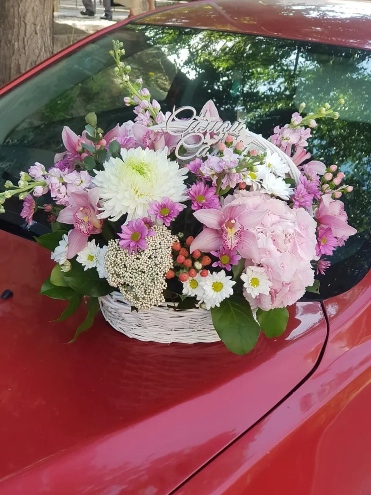

Прекрасный магазин! Всегда в наличии свежие цветы и очень красивые готовые композиции. Радует ассортимент: помимо флористики, можно взять шары и игрушки, что очень удобно для подарка в одном месте. Сотрудники максимально вежливые и профессиональные. Приятно, что ценят постоянных клиентов и делают скидки, а ежемесячные стихийные распродажи позволяют купить классный букет по очень выгодной цене. 5 звезд.
Подарок целиком
Не нужно бегать по трём магазинам
Букет, мишка, связка шаров и упаковка – всё на одной полке. Скажите, кого поздравляете, – поможем собрать подарок.
Букеты
Готовые или по вашей задумке
от 1800 ₽Композиции
В корзине и кашпо
от 1000 ₽Гелиевые шары
Фольгированные – цену уточните
от 150 ₽Мягкие игрушки
К букету или отдельно
800 ₽Упаковка и открытка
Подарочная упаковка, поздравительные открытки
упаковка 250 ₽Цены с Яндекс Карт, давно не обновлялись – точную стоимость назовут в магазине или в WhatsApp.
«помимо флористики, можно взять шары и игрушки, что очень удобно для подарка в одном месте.»Яна Александрова
Букеты
Готовый букет – или свой
«есть готовые букеты и ты можешь выбрать тот, который тебе нравится, а также ты можешь сам придумать композицию цветов, а консультант тебе в этом поможет.»Кристина Силина








Под ваш бюджет
Скажите сумму – подскажем, что выбрать
Не разбираетесь в цветах? Консультант подскажет, какие цветы дарят по вашему поводу и сколько их взять.
«Сотрудник помог подобрать подходящий (подсказал, какие цветы чаще используют для подарков и правильное количество, не сильно в этом разбираюсь), сделал всё быстро и хорошо упаковал.»Глеб Меньшиков
«помогли выбрать идеальный вариант в моём бюджете.»Татьяна, заказывала букет маме
«Сегодня срочно понадобился букет.Как всегда,не разочаровали..Благодарю!🌹»Лариса Герасименко
Скидки
Постоянным клиентам – скидки
О скидках для постоянных покупателей и акциях пишут в отзывах снова и снова. Условия: {{условия скидок и акций}}
«ещё есть гелиевые шары и мягкие игрушки) И шарики тоже взяли) Приветливый и компетентный персонал. А ещё постоянным клиентам предоставляют скидки.»Татьяна Забоева
«Покупала маме на день рождения цветы и гелиевые шарики … сделали скидку как постоянному клиенту, всем рекомендую»Ника

Доставка и самовывоз
Привезём или заберёте сами
- Доставка{{стоимость и зона доставки}}
- СамовывозКаждый день 9:00–20:00
- ОплатаНаличные, карта, перевод, онлайн, Kaspi QR
- Удобно прийтиПандус и лифт, парковка, можно с собакой до 35 см
«Цветы были свежие, все как на картинке, даже лучше! … Доставили вовремя, курьер вежливый. Мама была в восторге!»Марина Коваленко
Отзывы · 5,0 из 5
Что говорят о нас наши клиенты
На День рождения дочери заказали букет цветов. Выполнен на 5+! Цветы свежие, прекрасно подобраны в композицию. В салоне хороший выбор цветов, ещё есть гелиевые шары и мягкие игрушки) И шарики тоже взяли) Приветливый и компетентный персонал. А ещё постоянным клиентам предоставляют скидки. Обязательно вернёмся вновь за цветами!
Очень приятный магазин с душевной атмосферой! Заказывала букет на день рождения мамы, и осталась в восторге. Цветы были свежие, красиво собраны, и в подарок добавили маленькую открытку с пожеланиями. Отдельное спасибо за вежливое обслуживание — помогли выбрать идеальный вариант в моём бюджете. Теперь только сюда хожу
Не первый раз беру здесь букеты цветов.Знаю,что цветы простоят долго,радуя глаз.Флористы понимают с полуслова какой мне нужен букет,создают прекрасные и сказочно красивые композиции из цветов.Сегодня срочно понадобился букет.Как всегда,не разочаровали..Благодарю!🌹
Заказывала тут букет для мамы на день рождения. Цветы были свежие, все как на картинке, даже лучше! Очень понравилось как оформили - нежно и стильно, как я и просила. Доставили вовремя, курьер вежливый. Мама была в восторге! Обязательно буду заказывать еще.
Покупала в этом магазине цветов несколько раз букеты, последний раз покупала маме на день рождения. Мне нравиться этот магазин тем, что там большой ассортимент, очень много красивых цветов. Самое приятное это то, что есть готовые букеты и ты можешь выбрать тот, который тебе нравится, а также ты можешь сам придумать композицию цветов, а консультант тебе в этом поможет. Обслуживание на высшем уровне. Скоро день рождение моей бабушки, думаю, что куплю букет именно в этот магазине!!!
Купил букет для подарка, недорого для такого размера и красиво. Сотрудник помог подобрать подходящий (подсказал, какие цветы чаще используют для подарков и правильное количество, не сильно в этом разбираюсь), сделал всё быстро и хорошо упаковал. Как появится необходимость, приду сюда ещё раз.
Очень хороший цветочный магазин! Недавно приходила туда, чтобы купить букет классному руководителю на день учителя. Выбирала минут 10, очень большой выбор, в итоге попросила помощи у флориста, и она подобрала мне букет. Все цветы свежие, персонал добрый и всегда готов помочь, собирают очень красивые букеты. Рекомендую!
Покупала маме на день рождения цветы и гелиевые шарики, цветы качественные, стояли долго, не опадлаи, шары тоже порадовались, сделали скидку как постоянному клиенту, всем рекомендую
Отличный цветочный магазин! Всегда свежие цветы, красивые букеты и приятный персонал. Удобно, что есть мягкие игрушки и шары для дополнения подарка. Рекомендую!
Адрес
Рождественского, 6, корпус 4
+7 (996) 394-02-70- WhatsAppНаписать
- АдресОмск, ул. Рождественского, 6, корп. 4
- ЧасыКаждый день, 9:00–20:00
- СоцсетиОдноклассники